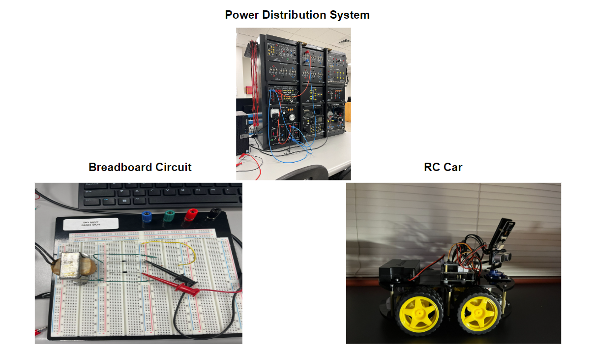

Worked with VHDL code to implement software to process and store information using different MOSFETs and electrical components along with working as part of a team on projects that involved creating circuits and debugging the circuit by inspecting all the code in the program to see if any errors arose to obtain the most accurate results and feedback while working in collaboration necessary for lab work in an introductory kinematics course in addition to doing extensive research on drafting papers from taking a technical writing course! I made an RC car my sophomore year and has taught me how to code using Audrino. I also debug circuits and test them using laboratory equipment such as a breadboard or power distribution system.
